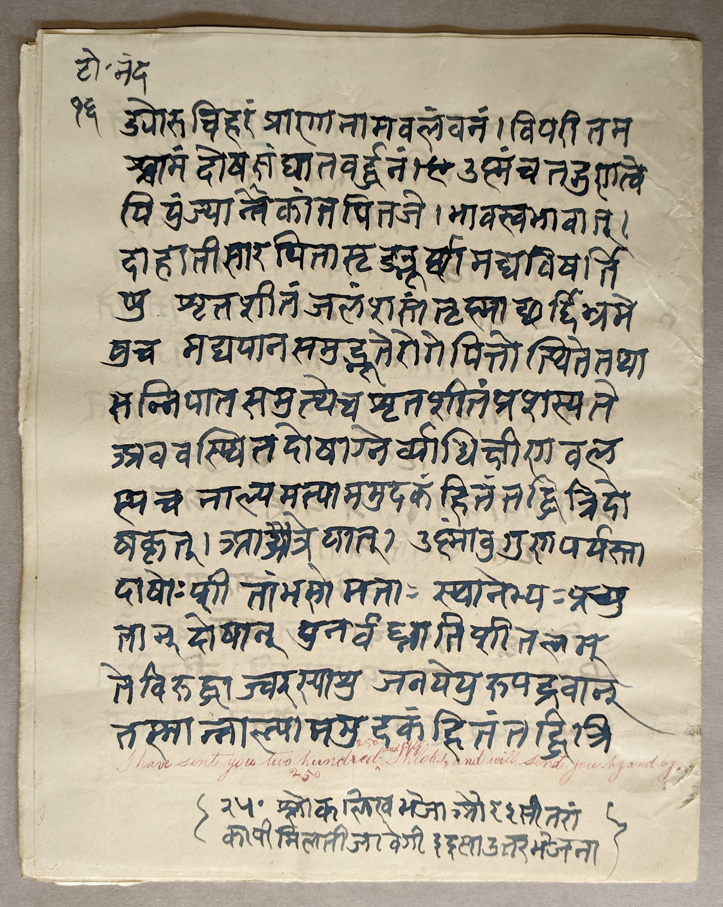

Scribes, editors, & librarians
between tradition and modernity in late colonial India
Charles Li

Palmyr Cordier, a French colonial doctor stationed in Chandernagor and Pondicherry, commissioned hundreds of Sanskrit manuscripts, mainly on medical topics, from different institutions across India between 1898 and 1904. This collection, now housed at the national library of France, presents a unique opportunity to study and compare scribal practices in the colonies and princely states of Alwar, Benares, Bengal, Bikaner, Bombay, Jammu & Kashmir, Madras, and Tanjore, all produced within the same span of six years. In addition, Cordier’s meticulous notes and correspondence present a window into the process of commissioning, producing, and shipping manuscripts. Rather than being mechanical copyists, many of the people employed by Cordier played active roles in editing and collating the texts; some of them were Āyurvedic experts. Their choices of script, material, format, and language reflect the widespread cultural, political, and economic changes that were taking place in that period, when Indian scholars were adopting modern technologies while, at the same time, reinventing or reasserting their traditions.
Table of Contents
Palmyr Cordier, a.k.a. Śrī Naukavirāja Rajjukāra
Cordier's ex-libris stamp on the cover of BnF Sanscrit 1242, which seems to depict Kṛṣṇa. Cordier described the Bengali pronunciation of Kṛṣṇa
as Kristǒ
(letter of 6/3/1898, 6); this stamp may be a sly reference to the Kṛṣṇa/Christ identification popularized in the 19th century by writers such as Louis Jacolliot (1869, 261ff). By the end of the 19th century, the British Empire had gained control over most of the Indian subcontinent, but France still held on to a number of colonies in the region. In the heat and humidity of the tropics, the French were assailed by infectious diseases and parasites that had never before been experienced in Europe, and it was in this context that the French colonial medical corps was founded, in 1890. During times of war, these medical officers were essential for the treatment of soldiers, but in times of relative calm, they also took up the task of caring for the medical needs of the colonial inhabitants (Héraut 2006, 386). Palmyr Uldéric Alexis Cordier (1871–1914) was one of the students of the very first class of the school for naval and colonial medicine, the Santé Navale in Bordeaux, where he completed a doctoral thesis on Indian medicine (Cordier 1894).
Much of what we know about Cordier’s activities following his graduation comes from his copious lettersArchived at the Wellcome Library, London. Consulted in February 2023 and June 2024. doi:10.34847/nkl.09c947qt to Gustave Liétard, a close friend and scholarly mentor in the history of Indian medicine. Upon joining the colonial medical corps, Cordier had, naturally, been hoping to be posted to India, but instead he was sent to serve in Senegal and then to Madagascar. But he continued his study of Sanskrit as well as Tibetan; in fact, he made connections with the Indian community in Madagascar, and, through them, was able to procure some books from Bombay (Roşu 1990, lxxi).BnF Sanscrit 1186, a printed pothi from Sri Venkateswar Press in Bombay, dated saṃvat 1952, śake 1817 (1895/96 CE), may have been obtained in this way. Finally, in 1898, he obtained a post in Chandernagor, a French colony in Bengal. While working every day at the hospital there, he continued his research on Indian medicine, getting to know the local community of medical practitioners: for a population of 25 000, he counted 52 physicians, including practitioners of allopathy, homeopathy, Yunani medicine, and some he deemed to be pure charlatans (letter of 29/11/1898, 8). But among them were also twelve traditional physicians who bore the title of kavirāja, king of poets,
which may refer to their familiarity with Sanskrit medical texts (Gupta 1976, 368).On the kavirāja title, Cordier writes: contrairement à ce que j’avais appris d’autres sources, U. C. Gupta m’affirme qu’il n’y a aucun examen obligatoire pour les Kavirājas, par suite aucune garantie ; en tout cas, le serment n’est plus prononcé. On se borne à s’y conformer, ce qui vaut mieux
(letter of 14/3/1900, 8). Some of these physicians were noted scholars themselves: Umeśacandra Gupta Kavirāja, for example, had recently published a comprehensive lexicon of Indian medical terminology (1894). Cordier noted that the medicine prescribed by the Kavirājas, according to Āyurvedic recipes, was better at treating chronic ailments than European medicine; however, they were also very expensive and usually reserved for the rich (letter of 29/11/1898, 9). Eventually, Cordier came to style himself as a Kavirāja as well ― on the cover of BnF Sanscrit 1242, dated 1899, an ex-libris stamp bears the name and title śrī naukavirājaḥ ḍa pa rajjukāraḥ, naval physician D[octor] P. Cord-maker,
giving a literal Sanskrit translation of his surname.
Mailing, copying, and photographing manuscripts
Many of the manuscripts that Cordier had copied came from the Asiatic Society in Calcutta ― then the capital of British India ―, just an hour away from Chandernagor.In his first letter from Chandernagor to Liétard, Cordier writes: vous savez que Chandernagor n’est qu’à une heure de Calcutta, par chemin de fer
(letter of 6/3/1898, 1). But he also had manuscripts mailed from other cities to be copied in Chandernagor. In an elaborate colophon to BnF Sanscrit 1177, composed in anuṣṭubh ślokas and drafted three times, Umeśacandra Gupta writes that, in Chandernagor, he copied a manuscript that had been brought there from Bikaner (samānītaṃ bikānīra-rājapustakasadmanaḥ).BnF Sanscrit 1177, 156‒157. There were also a number of old and rare Nepalese manuscripts at the Asiatic Society that had been acquired by Haraprasāda Śāstrī from his recent trips to Kathmandu, and for these, Cordier first photographed them before having transcriptions made from the photographs (Li 2022). In the case of the Kāśyapasaṃhitā, he even stacked the photographs and pierced a stringhole through them, binding them together like a palm-leaf manuscript.See BnF Sanscrit 1156. The palm-leaf manuscript itself now seems to be lost (Wujastyk 1998, 207).
Mailing label from Ānandāśrama, found with BnF Sanscrit 1255.Apart from Calcutta, Cordier also travelled across India to consult manuscripts in situ, first in North India, and then later, when he was based in Pondicherry, in South India. Since he did not stay long enough in each city to procure copies of everything that he wanted, he seems to have ordered copies to be produced and then mailed to him. Traces of these mailings can still be found in the collection: in BnF Sanscrit 1170, tucked inside one of its doubled folios, there are scraps of brown paper packaging with a colonial Indian postage stamp, addressed to Dr P. Cordier medecin des Colonies (French) Chandernagar Bengal
. Packaging found with BnF Sanscrit 1170.
BnF Sanscrit 1255 comes with a mailing label from Ānandāśrama, addressed from Harinarayan Apte, the superintendent at the time, to Cordier’s home in Besançon, France. Longer manuscripts or large orders of manuscripts were mailed in stages ― in BnF Sanscrit 1169, from Raghunath Temple in Jammu, a note at the end of the first part reads,
Packaging found with BnF Sanscrit 1170.
BnF Sanscrit 1255 comes with a mailing label from Ānandāśrama, addressed from Harinarayan Apte, the superintendent at the time, to Cordier’s home in Besançon, France. Longer manuscripts or large orders of manuscripts were mailed in stages ― in BnF Sanscrit 1169, from Raghunath Temple in Jammu, a note at the end of the first part reads, I have sent you two hundred and fifty Shloks, and will send you by and by
.Note at the end of BnF Sanscrit 1169a.
In some cases, manuscripts were not copied at the repository itself, but sent to a scriptorium ― manuscripts from Raghunath Temple were sent to Sri Ranbir Library to be copied;Letter found with BnF Sanscrit 1266. manuscripts from Deccan College were copied at Ānandāśrama.As noted by Cordier on the title card of BnF Sanscrit 1265.
Most of what we know about this collection comes from a long article published in Le Muśeon, based on a presentation that Cordier made at the Congrès des Orientalistes in Hanoi in 1902;The presentation was given on the morning of 6 December 1902 (Cordier 1903, 61). but, given the dates in the manuscript colophons, we know that he continued to receive manuscripts from India for a couple years afterwards. Unfortunately, he did not publish on the collection again; at the beginning of the First World War, he was drafted as part of the 5ème régiment d’infanterie coloniale and promptly taken prisoner in Alsace.Les docteurs Cordier, de Shaken, Franck et Mury sont restés aux mains de l’ennemi à l’ambulance de Walsheid, où ils donnent leurs soins aux nombreux blessés
(Bourdet 1920, 11). He died shortly after being released, in September 1914; his official cause of death was maladie contractée aux colonies avant guerre,
with the mention, Non Mort pour la France
(Ministère des armées).
Overview of the collection
Cordier’s manuscript collection resurfaced in 1932, when Jean Filliozat happened to recognize it at an antiquarian shop in Paris. He petitioned the Bibliothèque nationale de France to purchase the whole lot, and it is preserved there now, split between the Chinois, Indien, Sanscrit, and Tibétain collections. This present study concerns the Sanskrit medical manuscripts, which comprise 194 items from BnF Sanscrit 1148 to BnF Sanscrit 1332 (some shelfmarks contain multiple manuscripts). 10 of these are either prints, photographs, or older manuscripts that Cordier purchased; for example, BnF Sanscrit 1180 was previously owned by Rāma Hari Pāla Kavirāja, and BnF Sanscrit 1187 by Kavirāja Kāliprasanna Dās Gupta, both of Chandernagor. The remaining 184 were commissioned by Cordier and produced between 1898 and 1904, based on the dates given in the manuscripts themselves.This excludes colophons that were copied from an antigraph. Some of the manuscripts mentioned by Cordier in his article do not seem to be extant in the present collection (Roşu 1990, civ). The earliest date seen in the collection is 31 October 1898, written by Cordier on the back of BnF Sanscrit 1190, and is presumably the date on which the manuscript was received. Cordier spent the end of September and the beginning of October travelling across North India, looking for books and manuscripts (letter of 29/11/1898, 10). The latest date is found in the colophon to BnF Sanscrit 1325, corresponding to 3 January 1904.
The figure above shows these 184 manuscripts, their place of copy, their approximate sizeManuscript measurements were taken directly or, if the manuscripts were already microfilmed, approximated by measuring the pixel dimensions of the digital images. The library stamp was used as a reference, which measures 22 mm in diameter. These approximate measurements are marked with an asterisk in the tabular data.
and shape, and the names of scribes, editors, and procurers related to each manuscript. In many cases, Cordier did not contract directly with a scribe but with an authority figure, such as a librarian, who organized the copying of manuscripts and then sent them to Cordier; in this study, these people are grouped under the term procurer.
The names of these procurers are usually noted by Cordier himself, on a title card accompanying the manuscript, with the formula copié par les soins de….
Traditional forms in new materials
The collection offers a invaluable opportunity to compare the manuscript traditions of different Indian scribes and scriptoria working within the same period of six years. All 184 manuscripts are written on paper, but the quality and format of the paper differs significantly from region to region. It is generally accepted that papermaking technology spread through the subcontinent starting from the north, following the pattern of Mughal colonization and Islamization,Konishi 2013, 45, 57. There is some speculation that paper technology arrived earlier, from the northeast via the Silk Route, but no physical evidence of this remains (Soteriou 1999, 185‒189). and this north-south gradient can still be seen in some features of the collection under study. Across the Gangetic plain, in North India, the manuscripts in this collection are predominantly produced in the traditional, horizontal pothi format, while in South India, they are almost invariably vertically-oriented codices. In fact, the South Indian manuscripts use industrially-made British paper, sized to a standard foolscap folio, and in Tanjore, these pages are folded in half to form bifolia. In Madras, a local bookbinder has even been employed (BnF Sanscrit 1252 & 1253). These divergent choices show a striking divide between North and South Indian attitudes toward the tradition of manuscript-making at the turn of the century. In the north, where paper had been introduced at least since the 15th century (Konishi 2013, 57),Wujastyk dates the introduction of paper to the 12th century (2014, 167), and Tsien dates it between the 11th and 14th centuries (1985, 357). the material had long been used to produce Sanskrit manuscripts and had already become absorbed into local traditions, replacing palm leaves but mimicking their oblong shape and format. In the south, however, it seems that paper was not widely used until the era of British colonization, and consequently, the southern manuscripts use British materials and forms.
BnF Sanscrit 1232, pages 4–5. A sort of pothi/codex hybrid.But in this period, even in the north, a wide variety of print and manuscript formats are in circulation, and there are even some inventive, hybrid formats ― BnF Sanscrit 1232, a lithograph of the Vṛttaratnāvalīcandrikā, is printed horizontally, but it is paginated like a book and collated in sections of two bifolia. Thus, the choice to produce a manuscript in pothi format, in the same style as the centuries-old manuscripts that were being copied, seems to be a deliberate act on the part of the scribe or institution to reproduce a tradition that had already long been eroded by both Mughal and European influence. The format of a manuscript is also intimately related to the way in which it was used. As Cordier observed, the reading of a pothi was a ritual act: the reader, generally a brāhmaṇa, would sit in an ascetic pose, place the manuscript on his knees, and begin by reading the namaskāra out loud with hands clasped together, then continue to recite the text in a singing voice. The reader may already know the text by heart; the pothi seems to act more as a memory aid.A-t-on besoin de consulter un pothi…, le médecin, qui est généralement de caste brahmanique, accroupi sur son tréteau, à la manière d’un ascète, déroule gravement le plaque et place le livre sur ses genoux. A la première page, lisant les salutations du début
(letter of 29/11/1898, 9).
Ōm namo gaṇēçāya….
il porte à son front les deux mains étendues + réunies (namaskāra), puis commence à lire d’une voix chantante, mettant en relief les visarga. D’ailleurs il sait par cœur à peu près tout le contenu de ses pothis
A variety of paper types is also seen in the collection, ranging from handmade paper to industrial, watermarked paper produced in British as well as Indian mills.There is also one case of paper produced in Fiume, Croatia (BnF Sanscrit 1192). Handmade paper was already in steep decline in the 19th century, due to the export of the raw materials used to make it (Ramaseshan 1989, 115). This was part of a common strategy during the era of British rule ― raw materials were exported from the colonies, and then products made from those same materials were re-imported to be sold back to the same colonies (Konishi 2013, 113). The handmade paper industry greatly suffered from this policy, as well as from competition with jail paper, low-quality paper produced using the free labour of jail inmates (Konishi 2013, 123‒124). Nevertheless, in this collection, most of the manuscripts produced in the north are on handmade paper, and almost all of the manuscripts from Bikaner and Kashmir are written on handmade paper. As with the choice of pothi format, the choice to use handmade paper seems to be a deliberate nod to tradition, despite its decline. The paper used in the manuscripts from Kashmir is especially distinctive ― it is thin, glossy, very white and translucent, qualities that were attributed specifically to Kashmiri paper already in the 15th century (Ghori & Rahman 1966, 135‒137). The sheets are also cut to much larger sizes compared to pothi manuscripts in other parts of India, and they are often doubled; in fact, they may simply be sheets that were produced for making vertically-oriented codices, but rotated 90 degrees to approximate a pothi.
Scribes as scholars
Although printed books were undoubtedly a technical innovation that, eventually, displaced handwritten manuscripts, in this period both print and manuscript cultures existed side by side. In fact, 19th century India was replete not only with different forms of print reproduction ― lithography, movable type, and photography ― but also manuscripts that were copied from printed sources and, in this collection, from photographs. But scribes performed a task that was fundamentally different from the mechanical
labour of printing;Naturally, mechanical
forms of reproduction are also inherently interpretive, but their interpretive work usually goes into the reproduction of an image rather than of language. For examples, see Kriesel 2015 or Hertzmann 2022. they were interpreters, performing a linguistic mode of reproduction rather than a visual one. In this collection, this is perhaps most evident in the spaces and other punctuation that they have inserted in their copies ― rather than reproducing the scriptio continua of the original ―, as well as transliterating from other scripts into Devanāgarī, which was easier to read for Cordier. But many scribes have gone much further ― suggesting corrections for lacunae, editing the work of other scribes (BnF Sanscrit 1206, 1214, etc.), and even creating a table of contents at Cordier’s request (BnF Sanscrit 1218). In some cases, a manuscript is the result of a collation of multiple sources, giving variant readings in the margins; in one case, a scribe or procurer has evaluated different manuscripts of the same text and suggested which ones were most important (BnF Sanscrit 1258). The people that were employed by Cordier, whether directly or by proxy, were not mere copyists; they were professional consultants, with a deep knowledge of Sanskrit and, especially in Bengal, of Indian medicine as well.
Old texts with new colophons
End of BnF Sanscrit 1289. A drawing depicts the damaged state of the antigraph, and an accompanying note reads, (noṭa) yeha pustakaṃ vṛhatprayatnena likhitaṃ aśuddha atitvāt, Note: this manuscript has been copied with great effort, because it is exceedingly incorrect
. The vernacular yeha has been corrected with the Sanskrit idaṃ. Although the manuscripts being copied were all in Sanskrit, Sanskrit was not always the language that scribes chose to use in their colophons and notes. Here, again, we find a north–south divide ― while in the north, we have many examples of Sanskrit colophons, sometimes very elaborate, in the south, this is very rare. In fact, we have a number of examples in Madras and Tanjore of notes and colophons in English, and in some cases the scribe has given an English transliteration of his own name (BnF Sanscrit 1272, etc.).See also BnF Sanscrit 1327 below for an example of a note in Telugu and Tamil. This is in contrast to the north, where vernacular forms are sometimes corrected with proper
Sanskrit words (BnF Sanscrit 1289), and the scribe’s name is written in Sanskrit, with proper Sanskrit morphology as part of a colophon statement.
Praurohita Dīnāanātha
This scribal tendency to adopt Sanskrit is most pronounced in the manuscripts from Bikaner, almost all of which were produced by a single scribe, Purohita Dīnanātha. Cordier visited the library of the Mahārāja of Bikaner in September 1899 (Roşu 1990, xcvi), and the Bikaner manuscripts date starting from October of the same year. Although Cordier likely never met the scribe, Dīnanātha continued to produce manuscripts for him up until at least 1904, the latest date given in the manuscript colophons.
Purohita Dīnanātha’s colophons are all written in Sanskrit, but they also included some vernacular words that were gradually Sanskritized over time. In Sanskrit 1174, dated 1900, he names the place of copy as vīkāner, but in all other cases, it has been Sanskritized as vikramapura.BnF Sanscrit 1148, 1230, 1269, 1270, 1292, 1301, & 1231c. But even more striking is the different ways in which he spells his own name, and how it changes over time.
The date for BnF Sanscrit 1179B is based on BnF Sanscrit 1179A, which seems to be by a different scribe. The colophon reads: saṃ. | 1956 mitī āsoja vaha 15 buddhavāra. Interpreted as śuklapakṣa, this date seems to fall on a guruvāra rather than budhavāra.
The date for BnF Sanscrit 1231A is based on BnF Sanscrit 1231B; A and B seem to form a single codicological unit, although they are foliated separately.
| shelfmark | saṃvat date | CE year | spelling of name | |||
|---|---|---|---|---|---|---|
| BnF Sanscrit 1179B | [1956 | āśvina | śukla | 15] | [1899] | prohitadīnānātha |
| BnF Sanscrit 1230 | 1956 | kārttika | śukla | 2 | 1899 | prohitapuṣkaraṇādīnānātha |
| BnF Sanscrit 1222 | 1956 | kārttika | śukla | 15 | 1899 | prohitadīnānātha |
| BnF Sanscrit 1174 | 1956 | pauṣa | kṛṣṇa | 2 | 1900 | prohitadīnānātha |
| BnF Sanscrit 1161 | 1957 | vaiśākha | śukla | 7 | 1900 | prohitadīnānātha |
| BnF Sanscrit 1172 | 1957 | vaiśākha | śukla | 10 | 1900 | prohitadīnānātha |
| BnF Sanscrit 1158 | 1957 | vaiśākha | śukla | 13 | 1900 | prohitadīnānātha |
| BnF Sanscrit 1148 | 1957 | vaiśākha | kṛṣṇa | 14 | 1900 | prohitadīnānātha |
| BnF Sanscrit 1231C | 1957 | āṣāḍha | kṛṣṇa | 11 | 1900 | prohitadīnānātha |
| BnF Sanscrit 1269 | 1957 | āśvina | śukla | 12 | 1900 | prohitadīnānātha |
| BnF Sanscrit 1231A | [1900] | |||||
| BnF Sanscrit 1231B | 1957 | āśvina | kṛṣṇa | 10 | 1900 | prohitadīnānātha |
| BnF Sanscrit 1268 | pro. dīnānātha | |||||
| BnF Sanscrit 1270 | 1957 | kārttika | śukla | 10 | 1900 | prohitadīnānātha |
| BnF Sanscrit 1271 | prohitadīnānātha | |||||
| BnF Sanscrit 1275 | ||||||
| BnF Sanscrit 1276 | ||||||
| BnF Sanscrit 1277 | p | |||||
| BnF Sanscrit 1278 | ||||||
| BnF Sanscrit 1293 | purohitadīnanātha | |||||
| BnF Sanscrit 1302 | 1959 | caitra | kṛṣṇa | 13 | 1902 | purohitadīnanātha |
| BnF Sanscrit 1292 | 1959 | māgha | śukla | 5 | 1903 | purohitadīnanātha |
| BnF Sanscrit 1301 | 1960 | jyeṣṭha | kṛṣṇa | 2 | 1903 | purohitadīnanātha |
| BnF Sanscrit 1303 | purohitadīnanātha | |||||
| BnF Sanscrit 1324 | 1960 | mārgaśīrṣa | śukla | 14 | 1903 | purohitaḥ dīnanātha |
| BnF Sanscrit 1325 | 1960 | pauṣa | śukla | 15 | 1904 | purohitadīnanātha |
| BnF Sanscrit 1326 | purohitadīnanātha |
End of BnF Sanscrit 1277, showing Purohita Dīnanātha's corrected spelling of his name.By organizing his scribal output chronologically, based on the colophon dates and on the manuscript shelfmarks,The shelfmarks given by Filliozat usually follow the numbering given by Cordier himself on the title cards, and they seem to be in roughly chronological order, perhaps based on the date on which the manuscript was received. we can pinpoint the moment when he decided to Sanskritize his name, from Prohita Dīnānātha to Purohita Dīnanātha: in the colophon to BnF Sanscrit 1277, produced sometime between 1900 and 1902. Later on, in the colophon to BnF Sanscrit 1324, he even hypercorrects himself, writing lipīkṛtaṃ purohitaḥ dīnanāthena, putting the first part of his name in the nominative case but leaving the second part in the instrumental. It seems that, over a period of 5 years, it became more and more important for Purohita Dīnanātha to express himself in correct Sanskrit. Might this personal decision reflect broader trends of his historical moment?
Between Orientalism and Nationalism
Cordier, like all Western scholars at the time, was seeking something authentically Indian. Landing at Pondicherry, standing for the first time on the subcontinent, he was disappointed to discover that he had travelled all that way merely to disembark again on French territory. In fact, he complained that the native inhabitants of Pondicherry, who had voting rights and a colonial representative in French parliament, treated him, a civil servant, comme un domestique qu’il paye.
…l’arrivée à Pondichéry m’a mis aux prises avec la réalité : ici, l’on sent qu’on est en pays français. Fonctionnaires, bureaux, administrations, mais pas de port, si bien que le débarquement est même dangereux ; le natif vous coudoie avec insolence… Pensez donc, il est électeur, & vous considère un peu comme un domestique qu’il paye
(letter of 6/3/1898, 2). On colonial representation in French parliament, see Binoche-Guedra 1988. In Chandernagor, too, he bemoaned the fact that European civilization had modernized Bengal too much, introducing European medicine and displacing the traditional Kavirājas.…car la civilisation européenne a un peu trop modernisé le Bengale, où le Kavirāja n’est pas entouré d’une considération bien notable, et où l’on a plus souvent qu’ailleurs recours au médecin européen, ou aux praticiens natifs adeptes des systèmes allopathique ou homéopathique
(letter of 14/3/1900, 7). In comparing contemporary India with its ancient past, as imagined through reading Āyurvedic treatises like the Carakasaṃhitā and the Suśrutasaṃhitā, Cordier saw a tradition in decline ― for example, in the pronunciation of Sanskrit, which, in Chandernagor, was tinged with a Bengali accent,Les brahmes bengalis passent pour prononcer très mal le sanscrit
(letter of 6/3/1898, 4). and in the preparation of Āyurvedic remedies, which no longer conformed to the recipes given in the treatises, the ingredients being too expensive.On n’a plus en effet qu’une confiance médiocre dans les remèdes de Caraka & de Suçruta, car on sait que les Kavirājas les préparent sans scrupule & omettent la moitié des ingrédients qui doivent entrer dans leur composition. Un de ces médecins natifs m’a avoué qu’il ne pourrait jamais s’en tirer s’il voulait se conformer aux formules de maîtres, car les drogues reviendraient à un prix exorbitant : ayant voulu confectionner un jour un rasa fameux, il lui a fallu débourser 80 roupies
(letter of 6/3/1898, 6). In his research on Indian medicine, he found contemporary practitioners to be unreliable,Binod Lāl Sen et son oncle Ashutush Sen, Dēbendra Nāth Sen + Upendra Nāth Sen, Abinash même… sont des vulgaires farceurs
(letter of 14/3/1900, 7). so instead, he turned his focus to searching for vieux textes de la bonne époque
(letter of 14/03/1900, 2).
This Orientalist idealization of the ancient past, of Sanskrit, and of Āyurveda, was very amenable to the Hindu nationalist movements that were growing in popularity at the time, especially among Bengali intellectuals (van Bijlert 1996, 351‒353). In fact, both Sanskrit and Āyurveda were experiencing a revival (Ganeshan 2010, 111).This is something that Cordier himself noticed as well: Depuis quelques années, l’Āyurvēda semble renaître, et les Kavirājas font des affaires
(letter of 14/3/1900, 7). Cordier’s focus on the most ancient Āyurvedic texts ― which excluded, for example, Yunani medicine, which Cordier dismissed as étrangère à l'Inde par son origine
(1899, 556) ― was also shared by Hindu and Āyurvedic revivalists, who believed that successive foreign rulers, from the Mughals to the Europeans, had diluted indigenous medical knowledge (Cerulli 2022, 32). The way in which he imagines an ancient bonne époque was a common Orientalist visionIn some respects, Orientalist scholarship stood in opposition to the European colonialization effort, which, nominally, aimed to bring European civilization to an uncivilized East (Mill & Wilson 1858, 107). that fed into the aspirations of the nationalists who latched on to the idea of a greater India,
a Sanskrit culture that had, once, spread widely and even colonized other cultures (Bayly 2004). At the same time, in the south, a very different ideology was gaining traction ― the Tamil Purist movement, which stood in explicit opposition to the cultural influence of Sanskrit. While Purohita Dīnanātha was busy Sanskritizing his own name, V. G. Suryanarayana Sastri (1870‒1903), a professor of Tamil at Madras Christian College, was translating his Sanskrit name into its pure Tamil equivalent (Kailasapathy 1979, 27). This movement, too, drew some inspiration from Orientalist scholarship, especially that of Robert Caldwell (Solomon 2022).
BnF Sanscrit 1327, showing a note in Telugu and Tamil, with a Western numeral, at the bottom of page 60. The note reads, ((saśeṣamu)) 2va bukku cūḍumu—|| ireṇṭavatu pukku pārkkavum.Cordier’s manuscripts, collected from across India during this era of competing cultural and social ideals, are a fascinating reflection of his historical period. The scribal colophons, in their mixture of Sanskrit and vernacular languages, bear witness to how scribes imagined the past and, perhaps, also how they might have imagined a nationalist future. In the manuscripts’ materiality, as well, we find both traces of the past, in the north–south diffusion of paper technology and the use of the pothi format, and a hint of the future: the handmade paper industry, which had suffered so much from British colonial economic policy, would also eventually become a nationalist symbol, when Gandhi promoted handmade materials produced in India over imported foreign goods.I know that handmade paper can never supply the daily growing demand for paper. But lovers of the seven hundred thousand villages and their handicrafts will always want to use handmade paper, if it is easily procurable…. Who does not know the famous Ahmedabad paper? What mill-made paper can beat it in durability or polish?
(Gandhi 1948, 13). See also Konishi 2013, 133ff. Although Cordier was aiming to create a collection of texts representing the ancient history of Āyurveda, he has inadvertently captured a snapshot of his own time, in the traditions and aspirations of the people involved in producing his manuscripts.
Appendix I: Dramatis personae
This index of names found in the manuscript collection is presented in English alphabetical order, without splitting names into first and last, as they appear in the figure under Overview of the collection. The orthography follows the person’s own spelling of his own name, if possible; otherwise, it either reflects the orthography as found in Cordier’s notes or a normalized form. Many more names of people that Cordier met and worked with can be found in his letters to Gustave Liétard; these have not been included here.
Arthur Venis. Principal of Government Sanskrit College, Benares. In a note included with BnF Sanscrit 1228, Cordier writes: Copié en Mai-Juillet 1899. par les soins du Prof. A. Venis, principal.
Babu Maheścandraviśvās. According to Cordier, he was the procurer of BnF Sanscrit 1193, copied from a manuscript at Raghunāth Temple. On the note card for the manuscript, he writes, Copié par les soins du Babu Mahēçcandraviçwās, superintdt.
Bāladeva Śāstrī. According to Cordier, he is the procurer of BnF Sanscrit 1213, copied from a manuscript at Raghunāth Temple. Cordier describes having met him during his trip to Kathmandu (letter of 29/11/1898, 12).
Brāhmaṇaharananda. Scribe of BnF Sanscrit 1171, copied from a manuscript at Sanskrit College, Calcutta. The copy was corrected by Umeśacandra Gupta.
C. Krishnayya. Librarian in Tanjore. Recognized by his stamp, in which he bears the title Vernacular Librarian.
On the title card for BnF Sanscrit 1182, Cordier writes: Copie exécutée par le Paṇḍit C. Krishnayya.
Cecil Bendall. Professor at the University of Cambridge. He seems to have lent a Nepalese manuscript of the Yogaśataka to Cordier, which he copied in Besançon in 1901 (BnF Sanscrit 1256).
Dhannālāla Śarmā. Scribe in Alwar, working under Gaṅgādhara Jośī. Signs his name as bedapāṭhī dhaṃnālālaśarmmā (BnF Sanscrit 1212), vedapāṭhī dhannālālaśarmmā (BnF Sanscrit 1215), or da. dhannālālaśarmā (BnF Sanscrit 1216).
Gaṅgādhara Jośī. Head of the library of the Mahārāja of Alwar. In colophons, he is titled jośījī mahārāja śrī gaṃgādharajī munsarima sāhiba pustakaśālā sarakāra alavara (BnF Sanscrit 1215). Cordier acquired manuscripts through him; see, for example, BnF Sanscrit 1216, 1r, where Cordier notes, Copié par les soins du Paṇḍit Jōçī Gaṅgā Dhār.
Govindasiṃha Varmā. Scribe in Alwar, working under Gaṅgādhara Jośī. Signs his name as govindasiṃha varmmā (BnF Sanscrit 1217) or da. govindasiṃha (BnF Sanscrit 1227).
Haraprasāda Śāstrī. Sanskrit scholar and Bengali writer. He took over the supervision of the Notices of Sanskrit Mss catalogue from Rāja Rājendralāla Mitra, and he travelled to Kathmandu to consult and acquire Sanskrit manuscripts, which he deposited at the Asiatic Society in Calcutta (Li 2022). He lent his Nepalese manuscripts to Cordier to be photographed and copied.
Haricaraṇa Lāha. Scribe who copied manuscripts in Chandernagor that belonged to Haridāsa Dāsa Kavirāja.
Haridāsa Dāsa Kavirāja. Resident of Bibirhat, to the southwest of Calcutta. He lent manuscripts from his own collection to Cordier to be copied.
Harinarayan Apte. Marathi writer. He studied at Deccan College in Poona and was the superintendent of Ānandāśrama. He arranged for Deccan College manuscripts to be copied at Ānandāśrama and then mailed to Cordier in Besançon (BnF Sanscrit 1255).
K. Gopala Iyer. Scribe of BnF Sanscrit 1241, copied from a GOML manuscript. Cordier lists Śeṣagiri Śāstrī as the person who procured the copy.
Kālinātha Tripāṭhī. Scribe of BnF Sanscrit 1236A. He seems to have worked with Cordier directly, mentioning that the manuscript was copied for Dr. P. Cordier
in a note at the beginning.
Kavirāja Kāliprasanna Dās Gupta. Previous owner of BnF Sanscrit 1187, an older Bengali-script manuscript not commissioned by Cordier. Probably resident of Chandernagor. On the title card, Cordier writes: Chandernagor ; Kavirāja Kāliprasanna Dās Gupta.
In a letter to Liétard dated 29 November 1898 (8–9), Cordier calls him a Kavirāja érudit,
and lists the 15 medical texts in his library.
Kesampath Kumara Chakravarthi. Scribe of a number of manuscripts copied from the GOML.
Kuñjavihārī Nyāyabhūṣaṇa. Catalogued Sanskrit printed books and manuscripts at the Asiatic Society of Bengal (1899), supervised by Haraprasāda Śāstrī. He seems to have worked directly with Cordier, copying at least two manuscripts for him (BnF Sanscrit 1188, 1218).
Mādhava Tripāṭhī Mahādevagiri. Seems to be the procurer of BnF Sanscrit 1191, copied from a manuscript at the Asiatic Society of Bengal. At the end of the manuscript, a note in Devanāgarī reads idaṃ pustakaṃ mādhavatripāṭhinasya mā(!)hādevagirer labdhaṃ || The note seems to be in Cordier’s own hand.
N. Varadācārya. Editor of BnF Sanscrit 1286, copied by Kesampath Kumara Chakravarthi from a GOML manuscript. As noted by Cordier.
Pītāmbar Daujī. Mentioned once by Cordier as his contact in Bikaner: Copié par les soins de P. Pîtāmbar Daujī
(BnF Sanscrit 1158).
Purohita Dīnanātha. Also signs his name as prohitadīnānātha and prohitapuṣkaraṇādīnānātha. He was the scribe of almost every manuscript that Cordier acquired from Bikaner, between 1899 and 1904. On the Puṣkaraṇa name, see Wilson 1877, 171‒172 and Tod & Crooke 1920, 1255‒1256.
P. Arunachellum Mudr. Bookbinder in Pursewalkum [Puracaivākkam], Madras. His name seems to be an abbreviation of Arunācalam Mutaliyār.
Thanks to Emmanuel Francis for expanding this abbreviation. His stamp is found in the inside front cover of BnF Sanscrit 1252 and 1253.
Rāma Hari Pāla Kavirāja. Previous owner of BnF Sanscrit 1180, an older Bengali-script manuscript not commissioned by Cordier. Cordier notes, Ce Ms, qui provient de Rāma Hari Pāla Kavirāja, de Chandernagor, est en apparence incomplet.
Śeṣagiri Śāstrī. Curator, Government Oriental MSS Library and Professor of Sanskrit and Comparative Philology, Presidency College. He catalogued both Sanskrit and Tamil manuscripts at the GOML (1898). He procured BnF Sanscrit 1241, copied from a GOML manuscript, for Cordier.
Śītalāprasāda Śarmā. Scribe of BnF Sanscrit 1168 from Sanskrit College, Calcutta. He is perhaps the same person as Brahmacārī Sītal Prasād, who wrote a number of commentaries and studies on Jain texts (Wiley 2004, 199–200).
Shridhar R. Bhandarkar. Formerly assistant to the Professor of Oriental Languages, Deccan College
(1888) and later Professor of Sanskrit, Elphinstone College (1907). He catalogued the government collection of manuscripts deposited at Deccan College. One of these manuscripts he had copied for Cordier (BnF Sanscrit 1192).
Sylvain Lévi. Professor at the Collège de France. He obtained a number of Nepalese manuscripts from Nepal (1899), some of which Cordier photographed or transcribed (BnF Sanscrit 1154, 1167).
Umeśacandra Gupta Kaviratna Kavirāja. A specialist in Āyurveda. Among other works, he was the author of the Vaidyakaśabdasindhu, or a comprehensive lexicon of Hindu medical terms and names of drugs (1894). He was also the librarian at Government Sanskrit College, Calcutta. He copied manuscripts for Cordier as well as edited manuscripts copied by other scribes; in a letter dated 14 March 1900 (2), Cordier writes: U. C. Gupta est surtout employé à la correction des MSS. copiés à la maison ; cette correction est généralement faite avec toutes les garanties possibles, c. à d. par comparaison avec d’autres MSS
. Signs his name as śrī umeścandraguptakaviratnakavirāja (BnF Sanscrit 1177) or kavirāja śrī umeścandrakaviratna (BnF Sanscrit 1155).
Vindhyeśvarī Prasād Śarmā Dvivedī. Librarian of Government Sanskrit College, Benares, who produced editions of a number of Sanskrit texts. For Cordier, he obtained copies of texts originating in private libraries in Benares.
Appendix II: List of figures
 Cordier's ex-libris stamp.
Cordier's ex-libris stamp on the cover of BnF Sanscrit 1242, which seems to depict Kṛṣṇa. Cordier described the Bengali pronunciation of “Kṛṣṇa” as “Kristǒ” (letter of 6/3/1898, 6); this stamp may be a sly reference to the Kṛṣṇa/Christ identification popularized in the 19th century by writers such as Louis Jacolliot (1869, 261ff).
Cordier's ex-libris stamp.
Cordier's ex-libris stamp on the cover of BnF Sanscrit 1242, which seems to depict Kṛṣṇa. Cordier described the Bengali pronunciation of “Kṛṣṇa” as “Kristǒ” (letter of 6/3/1898, 6); this stamp may be a sly reference to the Kṛṣṇa/Christ identification popularized in the 19th century by writers such as Louis Jacolliot (1869, 261ff).- Packaging found with BnF Sanscrit 1170.
Packaging found with BnF Sanscrit 1170.
- Mailing label from Ānandāśrama, found with BnF Sanscrit 1255.Mailing label from Ānandāśrama, found with BnF Sanscrit 1255.
- Note at the end of BnF Sanscrit 1169a.
- Letter found with BnF Sanscrit 1266.Letter found with BnF Sanscrit 1266.
- Manuscripts commissioned by Cordier, 1898‒1904. Organized by place of copy, showing persons involved and their roles.
- Paper formats and relative sizes from four different places.
- BnF Sanscrit 1232, pages 4–5. A sort of pothi/codex hybrid.
- Texture of paper from three different places.
- End of BnF Sanscrit 1289. A drawing depicts the damaged state of the antigraph, and an accompanying note reads, (noṭa) yeha pustakaṃ vṛhatprayatnena likhitaṃ aśuddha atitvāt. The vernacular yeha has been corrected with the Sanskrit idaṃ.
- End of BnF Sanscrit 1277, showing Purohita Dīnanātha's corrected spelling of his name.
- BnF Sanscrit 1327, showing a note in Telugu and Tamil, with a Western numeral, at the bottom of page 60. The note reads, ((saśeṣamu)) 2va bukku cūḍumu—|| ireṇṭavatu pukku pārkkavum.
Bibliography
Bayly, Susan. 2004. Imagining
Modern Asian Studies 38(3): 703‒744. doi:10.1017/S0026749X04001246Greater India
: French and Indian Visions of Colonialism in the Indic Mode.
Bhandarkar, Shridhar R. 1888. A Catalogue of the Collections of Manuscripts Deposited in the Deccan College. Bombay: Government Central Press.
Bhandarkar, Shridhar R. 1907. Report of a second tour in search of Sanskrit manuscripts made in Rajputana and Central India in 1904–5 and 1905–6. Bombay: Government Central Press.
van Bijlert, Victor A. Sanskrit and Hindu national identity in nineteenth century Bengal.
In Ideology and status of Sanskrit: Contributions to the History of the Sanskrit language, ed. J. E. M. Houben, 347‒366.
Binoche-Guedra, Jacques-W. 1988. La représentation parlementaire coloniale (1871‒1940).
Revue Historique 280(2): 521‒535.
Bourdet, Lieutenant. 1920. Historique du 5e régiment d’infanterie coloniale pendant la Grande guerre (1914‒1918). Paris: Chapelot. gallica.bnf.fr/ark:/12148/bpt6k62167786.
Cabaton, Antoine. 1907. Catalogue sommaire des manuscrits sanscrits avec supplément manuscrit. Paris: E. Leroux. Supplemented by Jean Filliozat. gallica.bnf.fr/ark:/12148/btv1b10536321.
Cerulli, Anthony. 2022. The Practice of Texts: Education and Healing in South India. Oakland, CA: University of California Press. doi:10.1525/luminos.120
Chavannes, Édouard. 1914. Nécrologie. Le Dr. Palmyr CORDIER.
T’oung Pao 15(4): 551–553.
Cordier, Henri. 1903. Congrès des Orientalistes de Hanoï.
T’oung Pao 4(1): 53‒69.
Cordier, Palmyr. 1894. Étude sur la médecine hindoue (Temps Védiques et Héroïques). Paris: A. Bellier et Co.
Cordier, Palmyr. 1899. Médecins et Médecine au Bengale.
Annales d'hyiène et de médecine coloniales, Tome Deuxième. Paris: Imprimerie Nationale. 555‒562.
Cordier, Palmyr. 1903. Récentes découvertes de mss. médicaux sanscrits dans l’Inde (1898–1902).
Le Muśeon Nouvelle Śerie 4: 321–352.
Filliozat, Jean. 1934. Liste des manuscrits de la collection Palmyr Cordier conservés à la Bibliothèque Nationale.
Journal asiatique 224: 144–173.
Filliozat, Pierre-Sylvain. 2014. La collection Palmyr Cordier à la Société asiatique et à la Bibliothèque nationale de France.
Journal des Savants 2: 269–286.
Finot, Louis. 1914. Palmyr Cordier (1871–1914).
Bulletin de l’École française d’Extême-Orient 14: 99.
Franz, M. et al. 2016. Cytoscape.js: a graph theory library for visualisation and analysis.
Bioinformatics 32(2): 309–311, doi:10.1093/bioinformatics/btv557
Ganeshan, Uma. 2010. Medicine and Modernity: The Ayurvedic Revival Movement in India, 1885–1947.
Studies on Asia 4(1): 108‒131.
Gandhi, M. K. 1948. Cent Per Cent Swadeshi, or The Economics of Village Industries. Third edition. Ahmedabad: Navajivan Publishing House.
Ghori, S. A. K. & Rahman, A. 1966. Paper Technology in Medieval India.
Indian Journal of History of Science 1(2): 133‒149.
Gupta, Brahmananda. 1976. Indigenous Medicine in Nineteenth- and Twentieth-Century Bengal.
In Asian Medical Systems, ed. C. Leslie, 368–382. Berkeley: University of California Press.
Gupta, Umeśacandra. 1894. Vaidyakaśabdasindhu, or a comprehensive lexicon of Hindu medical terms and names of drugs. Calcutta: Girīśa Vidyāratna Press.
Héraut, Louis-Armand. 2006. La médecine militaire coloniale française : Une aventure médicale de trois quarts de siècle (1890–1968).
Histoire des sciences médicales 40(4): 381–392.
Héraut, Louis-Armand. 2007. Palmyr Uldéric Alexis Cordier (1871–1914).
Histoire des sciences médicales 41(2): 179–188.
Hertzmann, Aaron. 2022. The choices hidden in photography.
Journal of Vision 22(11): 10, 1‒7. doi:10.1167/jov.22.11.1.
Jacolliot, Louis. 1869. La bible dans l’Inde : vie de Iezeus Christna. Paris: A. Lacroix, Verboeckhoven & Cie. gallica.bnf.fr/ark:/12148/bpt6k6207136t.
Kailasapathy, K. 1979. The Tamil Purist Movement: a Re-Evaluation.
Social Scientist 7(10): 23‒51. doi:10.2307/3516775
Konishi, Masatoshi. 2013. Hāth-kāg̲h̲az: history of handmade paper in South Asia. New Delhi: Indian Institute of Advanced Study.
Kriesel, David. 2015. Lies, damned lies, and scans.
Presented at FrOSCon (Free and Open Source Software Conference), Bonn, 22 August. www.dkriesel.com/en/blog/2015/0823_video_slides_xerox_talk_froscon.
Nyāyabhūṣaṇa, Kunja Vihāri. 1899. Catalogue of printed books and manuscripts in Sanskrit belonging to the Oriental Library of the Asiatic Society of Bengal. Calcutta: Baptist Mission Press.
Li, Charles. 2022. Kathmandu, Calcutta, Paris: the life of a Tantric manuscript.
Texts Surrounding Texts: Satellite Stanzas, Prefaces and Colophons in South-Indian Manuscripts (Paris BnF and Hamburg Stabi collections). 1 March. doi:10.58079/uxzv tst.hypotheses.org/3191.
Lévi, Sylvain. 1899. Rapport sur sa mission dans l'Inde et le Japon.
Comptes rendus des séances de l'Académie des Inscriptions et Belles-Lettres 43(1): 71–92.
Mill, James, & Wilson, Horace Hayman. 1858. The History of British India, Volume II. Fifth edition. London: James Madden.
Ministère des armées. n.d. CORDIER Palmyr Uldéric Alexis, 18–02–1871.
Memoire des hommes. www.memoiredeshommes.sga.defense.gouv.fr/fr/ark:/40699/m00523a97c4c404d/5242c71b8a3a8.
Ramaseshan, Sita. 1989. The History of Paper in India upto 1948.
Indian Journal of History of Science 24(2): 103‒121.
Roşu, Arion. 1990. Un demi-siècle de recherches āyurvédiques. Gustave Liétard et Palmyr Cordier: travaux sur l'histoire de la médecine indienne. Paris: Collège de France.
Sastri, Seshagiri. 1898. Report on a search for Sanskrit and Tamil manuscripts for the year 1896–97. Madras: Government Press.
Solomon, John. 2022. Caldwell's Dravidians: Knowledge Production and the Representational Strategies of Missionary Scholars in Colonial South India.
Modern Asian Studies 56(6): 1741–1773. doi:10.1017/S0026749X21000524.
Soteriou, Alexandra. 1999. Gift of conquerors: hand papermaking in India. Chidambaram: Mapin.
Tod, James, & Crooke, William. 1920. Annals and Antiquities of Rajasthan, Vol. II. London: Humphrey Milford.
Tsien, Tsuen-Hsuin. 1985. Science and Civilization in China. Volume 5: Chemistry and Chemical Technology. Part I: Paper and Printing. Cambridge: Cambridge University Press.
Wiley, Kristi L. 2004. Historical Dictionary of Jainism. Lanham, MD: Scarecrow Press.
Wilson, John. 1877. Indian Caste, Vol. II. Bombay: Times of India.
Wujastyk, Dominik. 1998. The Roots of Ayurveda: selections from Sanskrit medical writings. New Delhi: Penguin.
Wujastyk, Dominik. 2014. Indian Manuscripts.
In Manuscripts Cultures: Mapping the field, ed. J. Quenzer, D. Bondarev, & J-U Sobisch, 159‒182. doi:10.1515/9783110225631.159